第1节：异常弹窗处理方法
一、异常弹窗处理方法
问题一：没有注册类
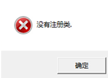
解答：安装flash或更新flash
问题二：二维状态下墙体散开
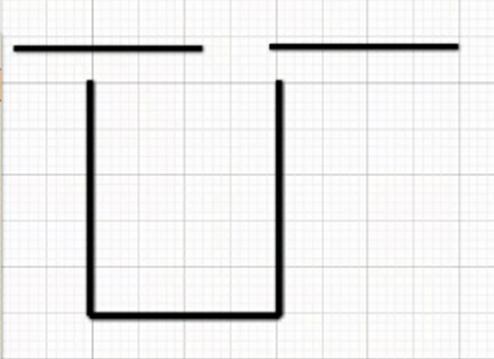
解答 ：安装flash
问题三：打开软件或是画图时提示
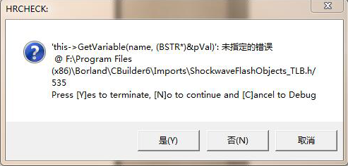
解答：flash插件bug,在flash官方提供的修复途径进行修复即可。点击“立即修复”在打开网页中按提示进行修复
问题四：输入软件号和授权码后出现错误提示窗
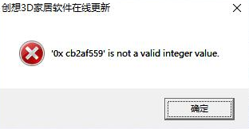
解答：账号输入出错，输入正确账号即可，注意不要有空格，横杠为英文状态
问题五：渲染时出现下列弹窗
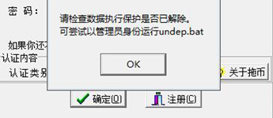
解答：先到软件根目录下以管理员身份运行undep.bat文件。如果还有提示的话按下列步骤操作：
（1）先点“WIN开始”键，输入cmd,右击“以管理员身份运行”
（2）在CMD中输入：bcdedit.exe/set {current} nx AlwaysOff
（3）“操作完成”就可以了，关闭并保存所有的东西。
（4）重新启动计算机生效。
问题六：渲染时出现下列弹窗
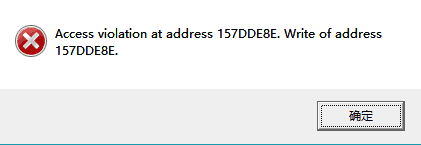
解答：将根目录下cxmt3d.exe和update.exe加入到数据保护
问题七：启动软件时提示“找不到指定模块”
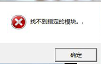
解答：
（1）如果提示没有指定模块点击确定看能不能进入到软件，若是不能，那么就是flash问题，需要更新flash
（2）若是能进入到软件，但是定制产品下没有内容，那么就是缺少xml组件，解压此文件后，以管理员身份，先运行CopyXML.bat,后运行RepairXML.bat
（3）如若还是不行，那么就是电脑缺少MDAC组件，安装即可
附件：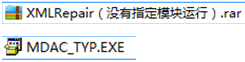
备注：上述操作有效的前提是电脑系统为完整版而非简化版
问题八：打开软件或是在操作软件时有下面提示：
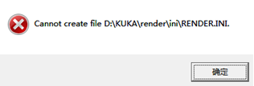
解答：启动了多个3D软件，关掉多开即可
问题九：二维转三维时提示“3D意外退出”
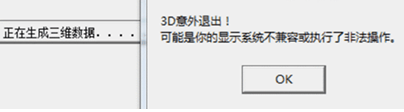
解答：调整电脑分辨率为推荐并且把字体大小调整为100%或正常大小。
问题十：提示.Net FramE work错误
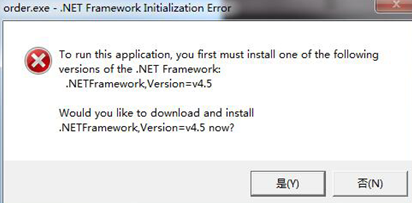
解答：安装.Net FramE work即可
问题十一：出现自动保存弹窗
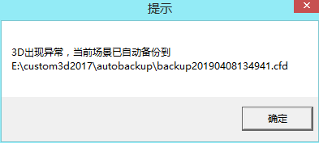
解答：显示方式发生改变，软件会自动保存并退出，可以按下图方式打开保存场景
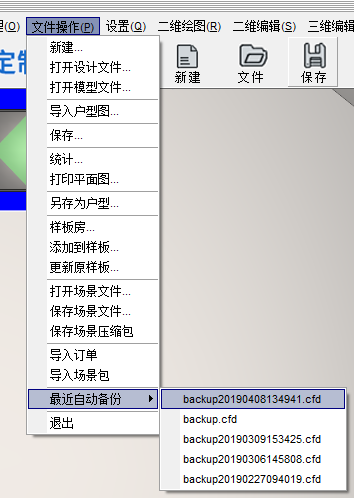
问题十二：WIN10电脑打开应用软件弹窗时会使软件关闭，怎么设置？
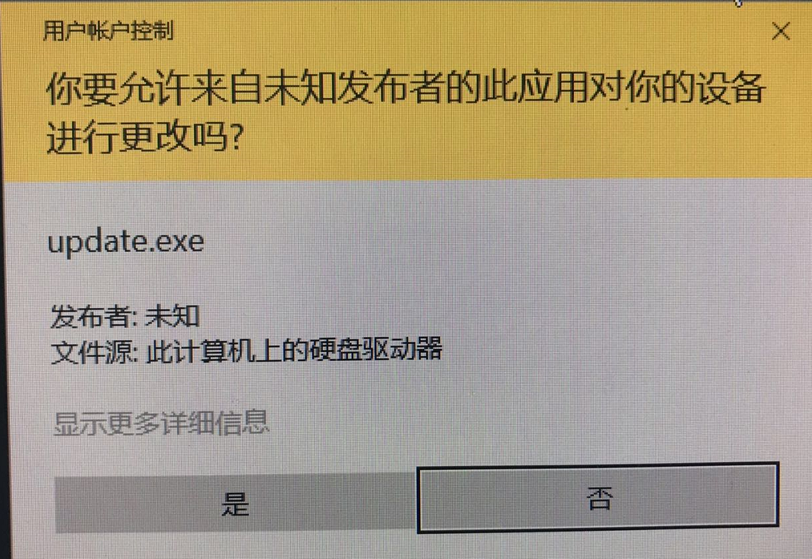
解答：关闭Win10打开软件时的提示弹窗的步骤如下：
（1）右键单击“此电脑”图标，在右键菜单中选择“属性”。
（2）弹出的属性窗口中，单击“安全和维护”选项。
（3）安全和维护界面中，单击“更改用户账户设置控制”选项
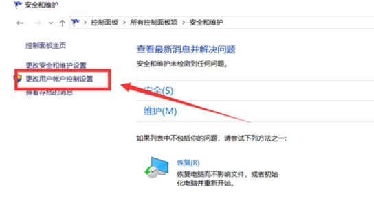
（4）弹出的窗口中，将控制按钮调到最下面的一个格
（5）单击下方“确认”按钮保存设置
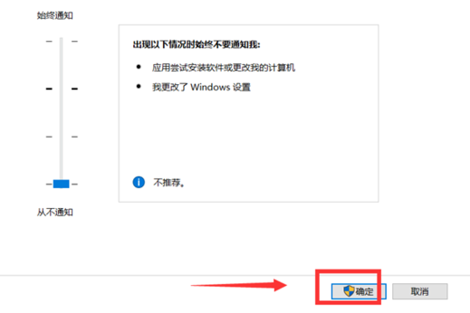
（6）最后由于更改设置会有询问窗口弹出，单击“是”即可完成设置

问题十三：画图时提示“内存不足”
解答：与电脑配置有关，可在软件中释放内存
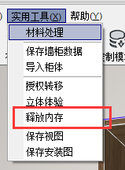
问题十四：提示函数调用失败
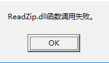
解答：
如果在软件自动更新是提示，点击OK即可
如果在画图过程中提示，释放内存即可（同问题十二处理方法相同）
问题十五：某种操作导致程序异常
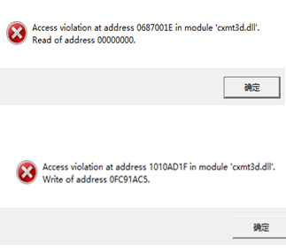
解答：结束软件进程
问题十六：场景异常导致的软件关闭
解答：联系技术人员查找场景里的问题产品